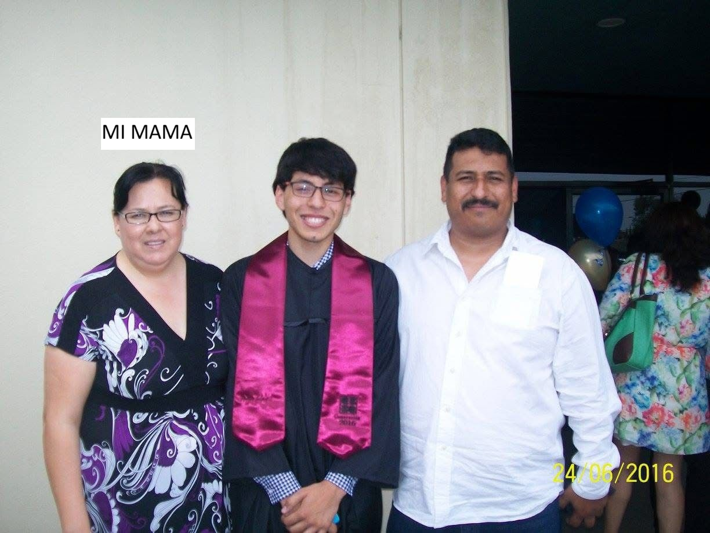

¿De qué trata esta rifa?
Ella es Karina Leyva, mi mamá. Tiene un problema en la vesícula en el cual, después de comer tiene unos dolores muy fuertes en la espalda y en el pecho. Esto provoca que tenga que comer poco y solo ciertas comidas.
Ya tiene mucho tiempo con este problema (más del año). No soy el único de mi familia que le pone triste ver el problema que tiene, así que, recurrí a organizar esta rifa para recaudar el dinero necesario para poder llevarla con un médico especialista a que le hagan una valoración y de ahí, una operación para quitarle la vesícula.

Objetivo de la página
Esta página fue creada con el fin de englobar todo lo relacionado con la rifa que se está promoviendo en la cuenta de Instagram "rifa pa mi jefita". Se busca que en esta página, puedan ver noticias acerca de las actualizaciones de la rifa y qué números han sido vendidos. También compartir los números de contacto.
- Mantener informados a todos sobre el progreso de la rifa
- Publicar los números disponibles y los ya vendidos
- Compartir actualizaciones sobre la salud de mi mamá
- Proporcionar información de contacto para participar
Síguenos en Instagram para más actualizaciones:
@rifa.pa.mi.jefita